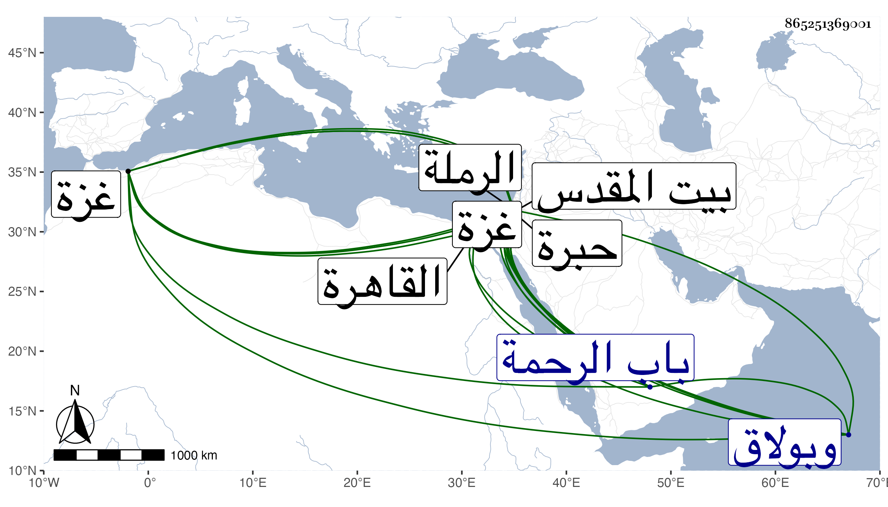

0902Sakhawi.DawLamic.ITO20230111-ara1.EIS1600.865251369001
Biography ID: 865251369001
39
أحمد بن علي بن إسحاق بن محمد بن الحسن بن محمد بن مصلح بن عمر بن عبد العزيز حاجي هكذا أملي على نسبه وساقه بعضهم فجعل بعد محمد الثاني عمر ابن عبد العزيز بن مصلح فالله أعلم . شهاب الدين بن العلاء التميمي الداري الخليلي الشافعي أخو عبد الرحمن الآتي وسبط البرهان إبراهيم بن يوسف بن محمود القرماني الماضي . ولد في ثامن عشري ربيع الآخر سنة إحدى وتسعين وسبعمائة بالخليل ونشأ به فقرأ القرآن على جماعة منهم الشمس محمد بن أحمد بن مكي وإسماعيل ابن إبراهيم بن مروان وغيرهما وحفظ العمدة والمنهاج وألفية ابن مالك وعرض على والده وكان قاضي بلده وابن الهائم والزين القمني والعلاء بن الرصاص في آخرين وتفقه بأبيه وعنه أخذ في العربية وعن ابن الهائم في الفرائض وقرأ البخاري فيما أخبر عن جده لأمه بل قال أنه سمعه على أبي الخير بن العلاء بقراءة القلقشندي ووجدته كذلك بخط العماد إسماعيل بن جماعة والله أعلم . وحج مرتين وولي قضاء الخليل والرملة في سنة تسع وثمانمائة وأضيف إليه مرة قضاء غزة مع الخليل وانفصل في أثناء ذلك مرارا وكذا ناب بالقاهرة عن شيخنا بجامع الصالح وبولاق . وولي بأخرة قضاء بيت المقدس عوضا عن البرهان بن جماعة فأقام دون نصف سنة وانفصل بالمذكور فلم يلبث إلا يسيرا ، ومات في العشر الأخير من رمضان سنة اثنتين وستين ودفن بمقبرة باب الرحمة رحمه الله . وكان متواضعا خيرا ذاكرا لمسائل وأشعار وسمعت من يصفه بالعفة في قضائه ولكنه كان رأس إحدى الطائفتين المتحاربتين ببلد الخليل نسأل الله التوفيق . ومما كتبت عنه ما أنشدنيه لفظا من نظمه :
| أمم أمام المصطفى فلك الهنا | بالفضل والفوز الكثير وبالمنى |
| وانزل بساحته ولذ بجنابه | ما خاب من يلجو إليه وإن جنى |
| يحمي النزيل بجاهه وذمامه | نال السعادة من أتى هذا الفنا |
| هذا الفنا قد حل فيه بينا | هذا الفنا قد حل فيه شفيعنا |
